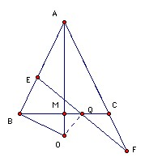

ABC is an isosceles triangle with AB = AC. M is the midpoint of BC and O is the point on the line AM such that OB is perpendicular to AB. Q is an arbitrary point on BC different from B and C. E lies on the line AB and F lies on the line AC such that E, Q, F are distinct and collinear. Prove that OQ is perpendicular to EF if and only if QE = QF.
Solution

Assume OQ is perpendicular to EF. Then ∠EBO = ∠EQO = 90o, so EBOQ is cyclic. Hence ∠OEQ = ∠OBQ. Also ∠OQF = ∠OCF = 90o, so OQCF is cyclic. Hence ∠OFQ = ∠OCQ. But ∠OCQ = ∠OBQ since ABC is isosceles. Hence ∠OEQ = ∠OFQ, so OE = OF, so triangles OEQ and OFQ are congruent and QE = QF.
Assume QE = QF. If OQ is not perpendicular to EF, then take E'F' through Q perpendicular to OQ with E' on AB and F' on AC. Then QE' = QF', so triangles QEE' and QFF' are congruent. Hence ∠QEE' = ∠QFF'. So CA and AB make the same angles with EF and hence are parallel. Contradiction. So OQ is perpendicular to EF.

© John Scholes
jscholes@kalva.demon.co.uk
30 Oct 1998
Last corrected/updated 25 Aug 03